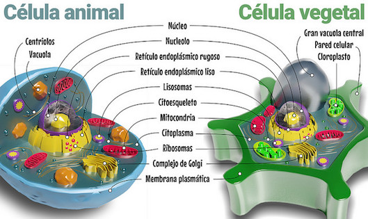
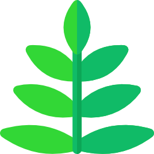
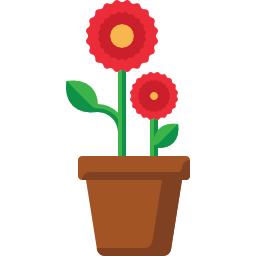
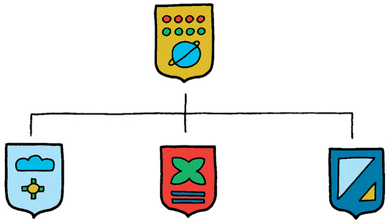
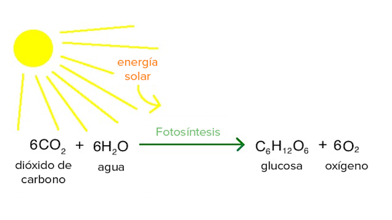
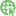
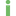

Origen y características de las plantas
Las plantas se originaron hace 500 millones de años a partir de algas verdes que se adaptaron a vivir en ambientes húmedos. Progresivamente, las algas verdes se transformaron en organismos adaptados al medio terrestre.
Veamos un vídeo sobre el origen de las plantas en el cual aparecen términos y conceptos conocidos y otros que de momento no lo son, pero que aprenderemos a lo largo de la secuencia didáctica.
 Canal en Youtube de Academia de Biología. Origen evolutivo de las plantas
Canal en Youtube de Academia de Biología. Origen evolutivo de las plantas
- Las primeras plantas terrestres que aparecieron fueron los musgos, que todavía muestran una gran dependencia de los ambientes húmedos y carecen de vasos conductores de savia, por lo que su crecimiento es escaso.
- En un entorno menos húmedo, algunos musgos evolucionaron y dieron lugar a los helechos, plantas con órganos diferenciados y vasos conductores de savia (cuya función es nutrir a la planta).
- Finalmente, de algunos grupos de helechos surgieron las plantas con semillas y flores (angiospermas y gimnospermas), que ya se independizaron del agua.
Un mapa mental nos ayudará a organizar los conocimientos (hacemos clic para verlo a mayor tamaño):
{kind=link}
La palabra angiosperma tiene su origen en estas dos voces griegas: angêion, «vaso», y spérma, «simiente, semilla».
La palabra gimnosperma proviene de las voces griegas gymnós,«desnuda», y spérma, «simiente, semilla».
Ahora tú. Identificamos las principales características de las plantas
Actividad 1. Características comunes
El reino de las plantas agrupa a unas 300 000 especies que pueden encontrarse en el medio terrestre o en el medio acuático. Constituyen un amplio y variado grupo de organismos con unas características comunes:
- Todos ellos son pluricelulares. Dentro de este reino es posible encontrar una gran variedad de niveles de complejidad estructural.
- Están constituidos por células eucariotas organizadas en tejidos. Cada tejido tiene una función diferente: crecimiento, protección... A su vez, los tejidos forman órganos, como las hojas.
- Sus células se caracterizan por tener pared celular y cloroplastos, una diferencia muy importante y esencial para la vida, respecto de las células animales.

{kind=link}
- Tienen nutrición autótrofa. No necesitan tomar los alimentos del medio como los animales: producen sus propios alimentos a partir de sustancias inorgánicas y la energía de la luz solar.
- Son organismos incapaces de desplazarse por sí mismos, que viven fijos a un suelo pero sí realizan movimientos. Por ejemplo, el girasol sigue el movimiento del Sol en el cielo. A pesar de no poder desplazarse, abundan en todos los ecosistemas terrestres. La única excepción son los lugares sin luz, como los fondos marinos, o sin agua, como los desiertos.
Actividad 2. Nos ponemos a prueba
Leemos el texto que aparece abajo y completamos las palabras que faltan. Las posibles palabras desordenadas son: sexual, raíz, eucariotas, hojas, movimientos, musgos, orgánica, pared, variedad, cloroplastos, solar, autótrofa clorofila y fijas.
Presentan un núcleo diferenciado, protegido por una membrana y con citoplasma organizado.
Capa protectora rígida y semipermeable localizada en el exterior de la membrana plasmática en las células de bacterias, hongos, algas y plantas. En las plantas está compuesta principalmente por celulosa.
Orgánulo presente en las células de las plantas, donde se desarrolla la fotosíntesis (el proceso que les permite sintetizar sustancias orgánicas usando la luz del sol como fuente de energía).
Ahora en equipo. Clasificamos las plantas
Actividad 3
En función de si se reproducen o no mediante flores, las plantas se pueden clasificar en dos grandes grupos: plantas sin flores y plantas con flores.
En esta actividad vamos a profundizar en sus características y vamos a completar una tabla y un mapa conceptual.
Nos informamos
|  |  |
| PLANTAS SIN FLORES NI SEMILLAS (documento editable) |
PLANTAS CON FLORES Y SEMILLAS (documento editable) |
{kind=link}
{kind=link}
Aprendemos con vídeo
 Canal en Youtube de José Gómez. Las plantas con flores y sin flores
Canal en Youtube de José Gómez. Las plantas con flores y sin flores
Organizamos la información
Para organizar la información sobre las plantas, elaboraremos un mapa conceptual que será evaluado por el profesor con la rúbrica del mapa.
Podemos hacerlo:
- Manualmente, en papel o cartulina con rotuladores.

Flickr. Jurgen Appelo. CC BY
- Digitalmente, usando una herramienta online como Draw.io. Seguiremos las instrucciones del tutorial ¿Cómo crear un mapa conceptual en Draw.io? Al finalizar, comunicaremos su dirección (URL) a nuestro profesor o profesora. También podemos hacerlo en Google Drawings (Dibujos).
{kind=link}
Pasos a seguir
- Leemos y subrayamos las ideas principales de la información textual:Plantas sin flores yPlantas con flores.
- Revisamos la información del vídeo.
- Seleccionamos los conceptos que consideremos más importantes y los colocamos en una lista, encerrándolos en un rectángulo o una elipse para verlos mejor.
- Colocamos los conceptos por orden de importancia: los más importantes en la parte superior y los menos importantes en la parte inferior.
- Utilizaremos el guion Organizando el mapa conceptual.
- Buscamos imágenes y/o vídeos para insertar en el mapa conceptual.
Ahora en equipo. Sin plantas no hay vida, importancia de las plantas en la biosfera
Actividad 4. Nos informamos
Las plantas realizan tareas fundamentales para el sostenimiento de la vida en la Tierra. Entre ellas destacamos las siguientes:
- Son las principales productoras del oxígeno del aire que respiramos.
Khan Adademy. Respiración y fotosístesis (CC BY-SA)
- Absorben dióxido de carbono del aire para fabricar sus propias sustancias orgánicas interviniendo así en la regulación de este gas en la atmósfera.
- Cumplen una importante función en las cadenas alimentarias de los ecosistemas terrestres. Son los productores de las sustancias orgánicas que sirven de alimento al resto de los organismos del ecosistema (hongos y animales).
- Evitan la erosión del suelo, ya que lo retienen con sus raíces.
Actividad 5. Investigamos
Realizaremos un informe sobre la importancia de las plantas en la biosfera centrado en las siguientes cuestiones:
- ¿Qué pasaría si desaparecieran todas las plantas de la Tierra?
-
Las plantas no solo tienen un importante papel ecológico, sino que también son de una gran importancia para el ser humano. De ellas obtenemos numerosos productos: alimentos (todas las frutas y verduras), infusiones (manzanilla, té, valeriana, etc.) o tejidos (algodón, lino, etc.). Enumeraremos algunos usos de las plantas en nuestra vida cotidiana.
-
Un producto de gran importancia obtenido de las plantas es el papel. ¿Cómo se fabricaban las primeras hojas de papel y cómo se fabrican actualmente? Pondremos especial atención en el reciclado de papel gracias al cual se reduce la tala de árboles, que ayuda a paliar problemas como el aumento de dióxido de carbono en la atmósfera. Visitaremos el  laboratorio virtual de reciclado de papel.
- Podemos informarnos en Internet u otras fuentes. Para realizar búsquedas en Google nos será de utilidad el documento "Recomendaciones de búsqueda en Google".
- Para realizar el informe, que será evaluado con la rúbrica de informe en equipo, usaremos la plantilla "Sin plantas no ha vida".
Hemos terminado esta sección y es el momento de ir añadiendo las palabras nuevas al GLOSARIO.
Diario de aprendizaje
- En el Diario de aprendizaje de nuestro portafolio individual haremos una nueva entrada que tendrá por título "Origen y características de las plantas".
- La escribiremos en nuestro cuaderno de clase o en un documento de Google Drive, utilizando la plantilla "Cuestionario de autoevaluación".
- Será evaluado a lo largo del proceso y al finalizar, para lo cual el profesor o profesora utilizará la rúbrica del Diario.
En el siguiente botón tenemos algunas orientaciones para ello.
Obra publicada con Licencia Creative Commons Reconocimiento Compartir igual 4.0